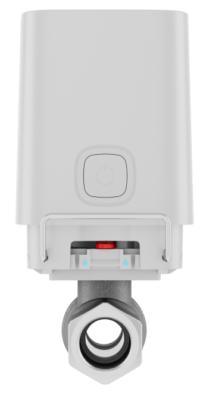
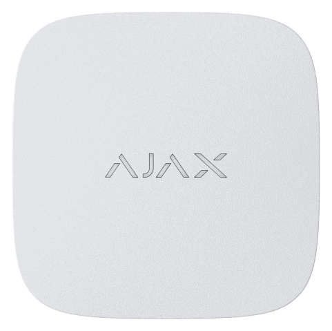
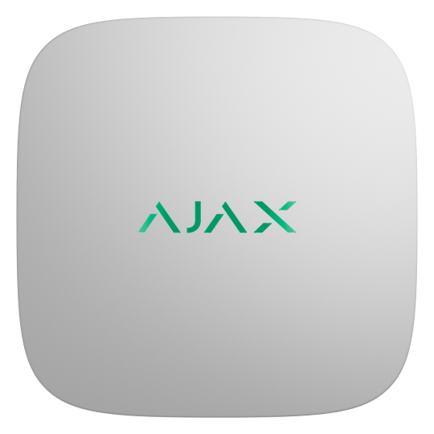
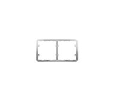
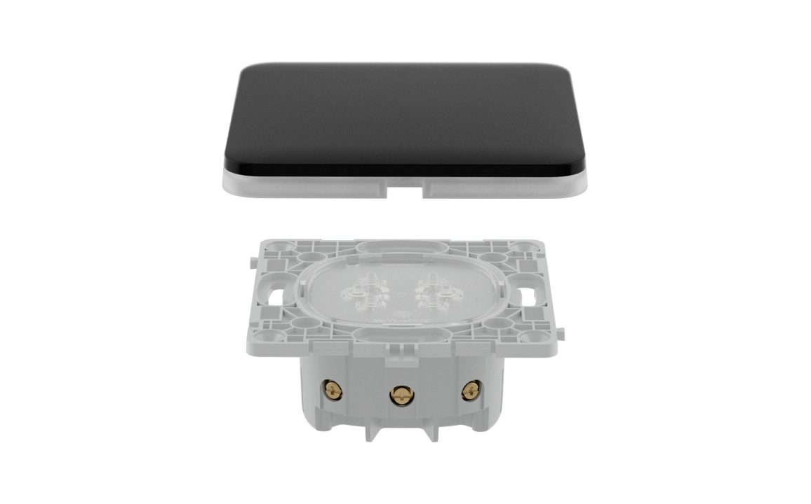
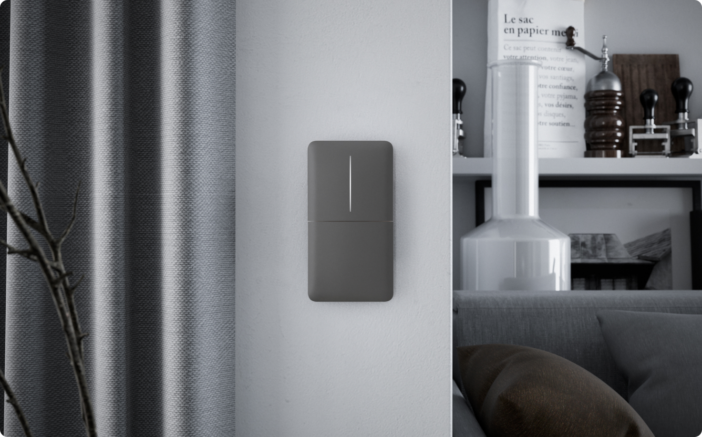
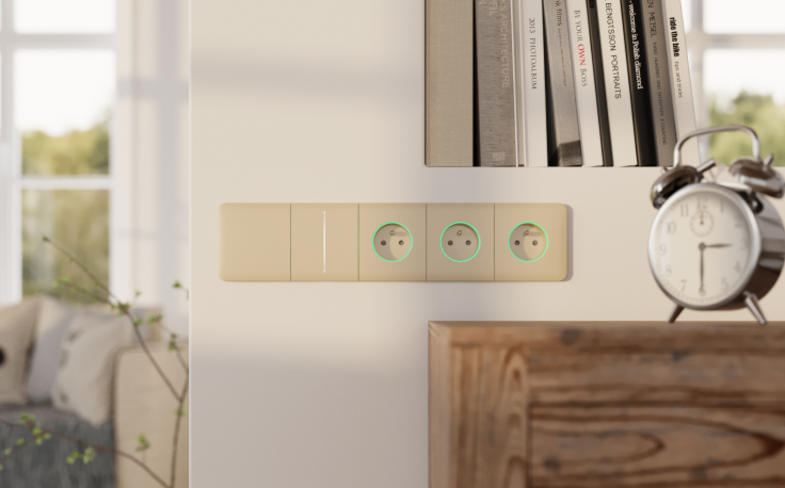

Gamme
Domotique
Automatismes, prises, relais, fuites d’eau et qualité de l’air : le confort dans la même application que la sécurité.
Scénarios dans l’application.
Prises, relais et interrupteurs Ajax réagissent à l’armement, à une alarme ou à une température.
Baseline vs Superior
Choisir le bon niveau.
La disponibilité Superior dépend des références et du projet. Orientation lors de l’étude gratuite.
Baseline · 3 références
L’essentiel, sans fil.
Large choix sans fil pour les besoins standards. Déploiement rapide, interface unique, évolutif : idéal pour démarrer et faire grandir votre système.
- Relais2 réf.
- Détecteurs de qualité de l'air1 réf.
Superior · 1 références
Pour les projets exigeants.
Sans fil et/ou filaire, multi-zones, sites sensibles : options avancées selon les références. Sur étude Active Sécurité 974, partenaire agréé Ajax Systems.
- Relais1 réf.
Baseline
Sélection du catalogue AS974.







Superior
Pour aller plus loin.

Prêt à sécuriser votre espace ?
Étude et devis gratuits, sans engagement. Intervention chez vous, partout à La Réunion.
Composer un ensemble d’interrupteurs et de prises.
Choisissez le nombre de postes, le modèle et le coloris. La composition part dans le devis, sans prix.
En savoir plus
Huit teintes de panneau : noir, graphite, blanc, ivoire, fumée, huître, gris et olive. Un poste seul se pose sans cadre. Les cadres existent en 2, 3, 4 et 5 postes. Les prises ne se combinent qu’à l’horizontale.





Source : Ajax Systems. Le visuel à trois postes est composé avec les packshots officiels : Ajax ne publie pas, dans les fichiers repris ici, une photo de cadre à trois postes seule.
Blanc · RAL 9003. Le RAL est une approximation indiquée par Ajax.
Performances annoncées.
Les chiffres du fabricant sont repris ici. Nous les vérifions chez vous avant le devis.
En savoir plus
Source : Ajax Systems
L’étude se fait chez vous, avant le devis.
Nous venons voir les circuits d’éclairage, le neutre disponible ou non, les prises à mesurer et les arrivées d’eau. Le devis gratuit décrit ensuite seulement ce que le lieu demande.
En savoir plus
L’analyse porte sur les risques et les accès, pas sur une liste d’appareils à placer partout. Deux maisons voisines ne donnent pas le même chantier. Des photos peuvent préparer la visite. Elles ne remplacent pas un test radio.
La pose, le réglage, puis nous restons joignables.
Nous posons, nous testons, puis nous vous montrons comment armer, lire une alerte et repérer une pile faible.
En savoir plus
Les liaisons filaires et l’alimentation suivent le plan de l’étude. Les utilisateurs et les scénarios sont réglés avec vous. Le dépannage suit ce qui est écrit au devis. La télésurveillance, si vous la souhaitez, se discute à part. Elle n’est pas un service déjà ouvert.
Le choix se fait dans le catalogue, pas dans deux coloris imposés.
Cette famille compte 27 références, dont 22 en Jeweller et 1 en Fibra. Chaque fiche montre uniquement les coloris documentés pour ce modèle.
En savoir plus
Coloris rencontrés ici : Blanc, Fumée, Graphite, Gris, Huître, Ivoire, Noir, Olive. Le sélecteur de version ouvre les autres optiques, formats ou alimentations de la même famille. On agrandit le système dans la même application, sans changer de marque.
Pourquoi choisir Active Sécurité 974.
Nous venons, nous chiffrons le système installé, puis nous le posons. Pas de classement, pas de nombre de clients, pas d’avis inventé.
En savoir plus
Un kit vous laisse le plan et les tests. Un installateur multimarque couvre plusieurs catalogues. Certaines offres lient le matériel à un abonnement. Ici, le devis porte d’abord sur l’installation. La télésurveillance, si vous la voulez, se discute à part et n’est pas un service déjà ouvert.
- –Kit à monterLe plan et les tests restent chez vous.
- –MultimarquePlusieurs catalogues, plusieurs logiques.
- –Abonnement liéLe matériel est parfois lié à un contrat.
- ✓AS974Étude, devis, pose, puis le SAV.
Toutes les références, pour choisir puis demander un devis.
Ouvrez la liste, choisissez une fiche, puis le coloris. Le devis reprend exactement ce choix.
En savoir plus
- LightSwitch (1-gang) [120] JewellerRéf. LS.1G120.J · Noir, Graphite, Blanc, Ivoire, Fumée, Huître, Gris, Olive. Interrupteur tactile intelligent simple
- LightSwitch (1-gang) JewellerRéf. LS.1G.J · Noir, Graphite, Blanc, Ivoire, Fumée, Huître, Gris, Olive. Interrupteur tactile intelligent simple
- LightSwitch (2-gang) JewellerRéf. LS.2G.J · Noir, Graphite, Blanc, Ivoire, Fumée, Huître, Gris, Olive. Interrupteur tactile intelligent double
- LightSwitch (2-gang/2-way) JewellerRéf. LS.2G2W.J · Noir, Graphite, Blanc, Ivoire, Fumée, Huître, Gris, Olive. Interrupteur tactile intelligent double va-et-vient
- LightSwitch (2-way) JewellerRéf. LS.2W.J · Noir, Graphite, Blanc, Ivoire, Fumée, Huître, Gris, Olive. Interrupteur tactile intelligent va-et-vient
- LightSwitch (3-way) [120] JewellerRéf. LS.3W120.J · Noir, Graphite, Blanc, Ivoire, Fumée, Huître, Gris, Olive. Interrupteur tactile intelligent va-et-vient
- LightSwitch (4-way) [120] JewellerRéf. LS.4W120.J · Noir, Graphite, Blanc, Ivoire, Fumée, Huître, Gris, Olive. Interrupteur tactile intelligent de croisement
- LightSwitch (Crossover) JewellerRéf. LS.C.J · Noir, Graphite, Blanc, Ivoire, Fumée, Huître, Gris, Olive. Interrupteur tactile intelligent de croisement
- LightSwitch (Dimmer) JewellerRéf. LS.D.J · Noir, Graphite, Blanc, Ivoire, Fumée, Huître, Gris, Olive. Interrupteur tactile intelligent à variateur
- CoverPlateRéf. CP.Y.Y · Noir, Graphite, Blanc, Ivoire, Fumée, Huître, Gris, Olive. Cache de boîte d'encastrement
- Outlet (basic) [type E]Réf. OL.BE.Y · Noir, Graphite, Blanc, Ivoire, Fumée, Huître, Gris, Olive. Prise encastrée murale avec mise à la terre
- Outlet (basic) [type F]Réf. OL.BF.Y · Noir, Graphite, Blanc, Ivoire, Fumée, Huître, Gris, Olive. Prise encastrée murale avec mise à la terre
- Outlet (LAN)Réf. OL.LAN.Y · Noir, Graphite, Blanc, Ivoire, Fumée, Huître, Gris, Olive. Prise encastrée Ethernet double port
- Outlet [type E] JewellerRéf. OL.E.J · Noir, Graphite, Blanc, Ivoire, Fumée, Huître, Gris, Olive. Prise encastrée intelligente avec monitoring de la consommation électrique
- Outlet [type F] JewellerRéf. OL.F.J · Noir, Graphite, Blanc, Ivoire, Fumée, Huître, Gris, Olive. Prise encastrée intelligente avec monitoring de la consommation électrique
- Socket (type B) JewellerRéf. SK.B.J · Noir, Blanc. Prise portable intelligente avec monitoring de la consommation électrique
- Socket (type F) JewellerRéf. SK.F.J · Noir, Blanc. Prise portable intelligente avec monitoring de la consommation électrique
- Socket (type G) JewellerRéf. SK.G.J · Noir, Blanc. Prise portable intelligente avec monitoring de la consommation électrique
- Relay JewellerRéf. RL.Y.J · Noir. Relais sans fil à contact sec
- Superior MultiRelay FibraRéf. MR.Y.F · coloris à préciser au devis. Relais à quatre canaux avec commande à distance
- WallSwitch JewellerRéf. WS.Y.J · Noir. Relais de puissance sans fil pour contrôler à distance l'alimentation 110/230 V~
- LifeQuality JewellerRéf. LQ.Y.J · Noir, Blanc. Moniteur sans fil de température, d'humidité et de CO₂
- LifeQuality Lite JewellerRéf. LQ.L.J · Noir, Blanc. Moniteur sans fil de température et d'humidité
- LeaksProtect JewellerRéf. LP.Y.J · Noir, Blanc. Détecteur sans fil de fuites d'eau
- Ajax WaterStop 1" (DN 25) JewellerRéf. WTS1.Y.J · Noir, Blanc. Vanne d'arrêt d'eau télécommandée sans fil
- Ajax WaterStop ½" (DN 15) JewellerRéf. WTS15.Y.J · Noir, Blanc. Vanne d'arrêt d'eau télécommandée sans fil
- Ajax WaterStop ¾" (DN 20) JewellerRéf. WTS20.Y.J · Noir, Blanc. Vanne d'arrêt d'eau télécommandée sans fil